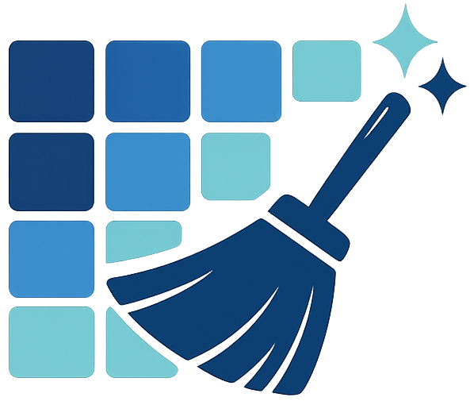

Evidence, not estimates, for how landscapes are changing.
We combine remote sensing, ecological modeling, and social-ecological systems research to answer one question for donors, conservancies, and governments across the region: is this land-use or climate claim actually true — and can we prove it over time?
What We Offer
Five layers of analysis, stacked around one landscape.
Each service reads like a layer in a GIS project — independently useful, and stronger together. Pick one, or let us build the full stack for a project.
LAYER 01
Digital MRV & Carbon Verification
Independent, satellite-grounded MRV for carbon and biodiversity credit projects
We build and audit measurement-reporting-verification pipelines — biomass estimation, land-cover change detection, time-series monitoring — to registry standard, so credits hold up to scrutiny and due diligence holds up to buyers.

LAYER 02
Land-Use & Land-Cover Change Modeling
Mapping and forecasting how agriculture, settlement, and forest cover are moving
Historical change detection and scenario modeling for deforestation, agricultural expansion, and urban growth — built for spatial planning, safeguard compliance, and donor reporting.
LAYER 03
Landscape Connectivity & Conservation Planning
Habitat fragmentation, wildlife corridors, and human-wildlife conflict — mapped and modeled
Connectivity analysis and protected-area effectiveness assessments that show where conservation investment and community agreements will actually hold, not just where a map says they should.
LAYER 04
LAYER 05
Climate Adaptation & Food-Security Modeling
Drought, rangeland, and yield forecasting for the people who plan around them
Spatiotemporal modeling of drought risk, pastoral resilience, and agricultural yield, built to support early-warning systems and index-based insurance design.
Approach
Three things every layer is built on.
A
Field-grounded
Every model is checked against ground truth — plots, transects, or partner verification — not just pixels.
B
Community-informed
Social-ecological methods mean local governance and knowledge shape the analysis, not just the output.
C
Registry-ready
Work is documented to the standard carbon registries, donors, and auditors actually require — no rework at review time.
Sectors
Who we build these layers for
Carbon & Conservation Finance Government & County Planning Multilaterals & Bilateral Donors Research Institutions Agriculture & Insurance
Have a landscape that needs a closer look?
Tell us what you’re trying to prove, protect, or plan for. We’ll tell you which layers apply.
Social-Ecological Systems & Resilience Assessment
Where land, climate, and community governance meet — analyzed together, not separately
We pair spatial data with social science to assess resilience, land governance, and community-based natural resource management — the layer most geospatial firms skip, and most funders now expect.